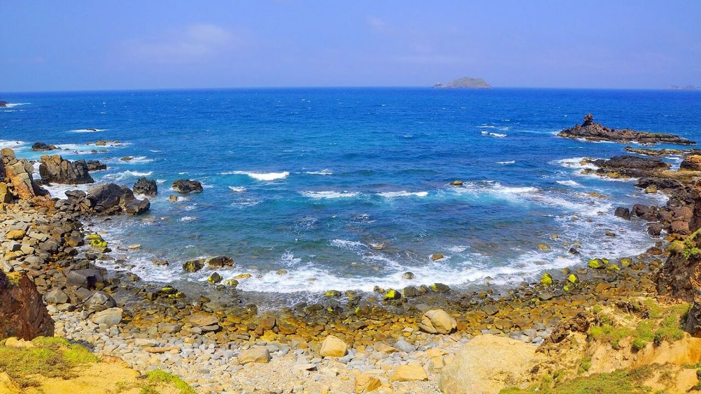
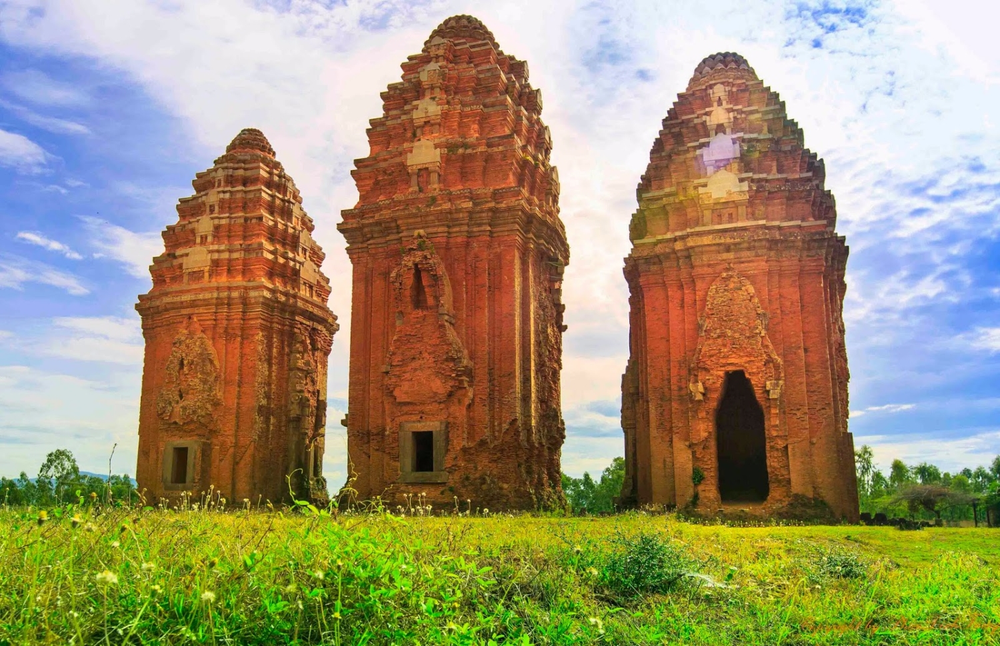
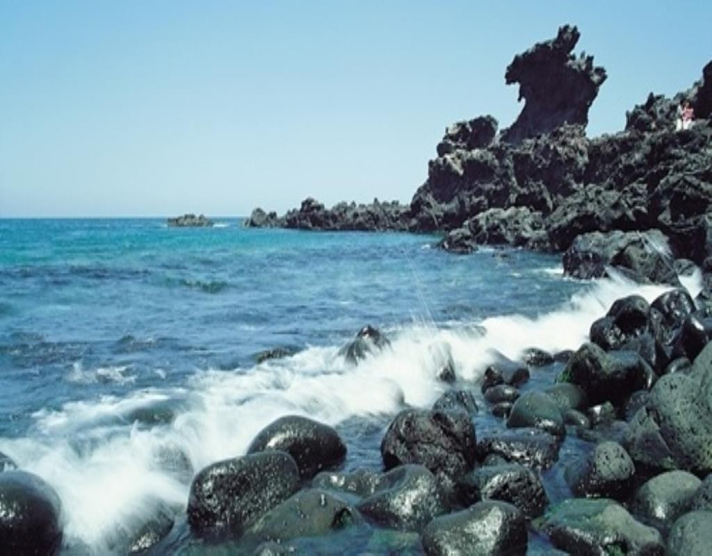
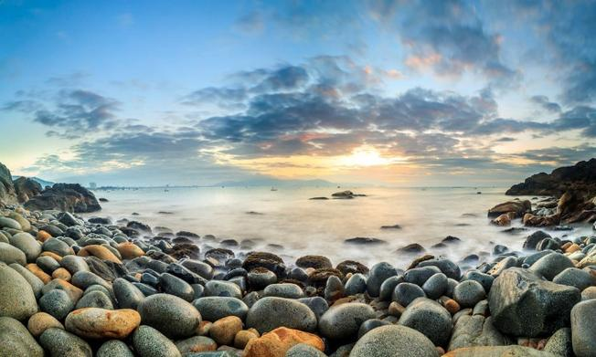

Tận hưởng những trải nghiệm thú vị tại Bình Định

Kỳ Co - Thiên đường biển đảo Quy Nhơn

Tháp Bánh Ít - Kiến trúc Chăm Bình Định

Mũi Vi Rồng - Long mạch chốn nhân gian

Ghềnh ráng - Viên ngọc bích giữa biển xanh